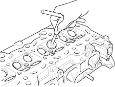
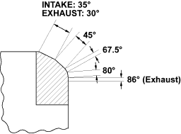
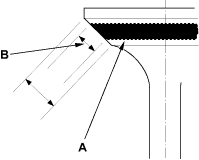

- Inspect valve stem-to-guide clearance (see page 6-35). If the valve guides are worn, replace them (see page 6-36) before cutting the valve seats.
- Renew the valve seats in the cylinder head using a valve seat cutter.

- Carefully cut a 45° seat, removing only enough material to ensure a smooth and concentric seat.
- Bevel the upper and lower edges at the angles shown in the illustration.
Check the width of the seat and adjust accordingly.


- Make one more very light pass with the 45° cutter to remove any possible burrs caused by the other cutters. Valve Seat Width:
Standard (New):
1.25 - 1.55 mm (0.049 - 0.061 in.)
Service Limit:
2.00 mm (0.079 in.)
- After resurfacing the seat, inspect for even valve seating: Apply Prussian Blue compound (A) to the valve face. Insert the valve in its original location in the head, then lift it and snap it closed against the seat several times.

- The actual valve seating surface (B), as shown by the blue compound, should be centred on the seat.
- If it is too high (closer to the valve stem), you must make a second cut with the 67.5° cutter to move it down, then one more cut with the 45° cutter to restore seat width.
- If it is too low (close to the valve edge), you must make a second cut with the 35° cutter (intake side) or the 30° cutter (exhaust side) to move it up, then make one more cut with the 45° cutter to restore seat width.
NOTE: The final cut should always be made with the 45° cutter.